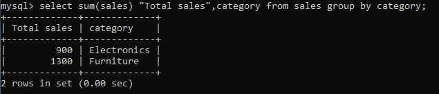

ORDERING THE RESULT OF A QUERY AGGREGRATE FUNCTION
1. GROUP BY:
A GROUP BY statement sorts data by grouping it based on column (s) you specify in the query and is used with aggregate functions. An ORDER BY allows you to organize result sets alphabetically or numerically and in ascending or descending order. In this tuto
GROUP BY is useful for returning multiple desired results sorted by your specified group(s), rather than solely one column. Additionally, GROUP BY must always come after the FROM statement and the WHERE clause, if you choose to use one. Here’s an example of how a query with a GROUP BY and aggregate function is structured:
GROUP BY syntax:

2. ORDER BY:
The function of the ORDER BY statement is to sort results in ascending or descending order based on the column(s) you specify in the query. Depending on the data type stored by the column you specify after it, ORDER BY will organize them in alphabetical or numerical order. By default, ORDER BY will sort results in ascending order; if you prefer descending order, however, you have to include the keyword DESC in your query. You can also use the ORDER BY statement with GROUP BY, but it must come after in order to function properly. Similar to GROUP BY, ORDER BY must also come after the FROM statement and WHERE clause. The general syntax for using ORDER BY is as follows: